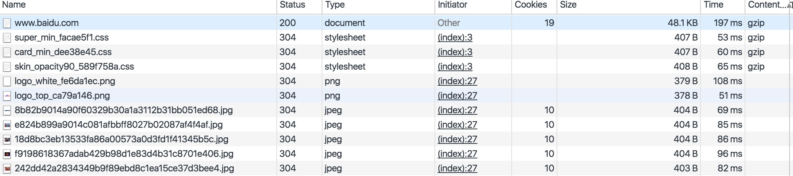

http缓存
一般浏览器都实现了 HTTP 缓存！ 我们所要做的就是，确保每个服务器响应都提供正确的 HTTP 头指令，以指导浏览器何时可以缓存响应以及可以缓存多久。
Expires 或 Cache-Control:max-age 组成缓存第一道“防线”。如果没有超过缓存失效时间，那么将直接从浏览器本地获取缓存资源。从浏览器调试工具network可以看到如图状态：（注意status此时为200）

确保devtools设置如下：去掉勾选（Disable cache)

如果过期，则进入第二道“防线”。第二道“防线”由 Last-Modified 或 Etag 担任。请求时会带上请求头字段:
If-Modified-Since:Fri, 03 Jun 2016 07:06:57 GMT
If-None-Match:W/"57512c91-986b"它们分别与响应头字段Last-Modified 和 Etag对应。这里所携带的值，就是上一次响应头字段的值。（注意，这里发送了一个请求，如果状态为304表示，则表示资源并未更改过，可以从本地缓存里取）如图：

至此，浏览器缓存大致可总结为有两级缓存。但是这些字段之间有啥区别，使用细节如何，以下继续讨论。
Expires vs Cache-Control: max-age
https://www.w3.org/Protocols/rfc2616/rfc2616-sec14.html#sec14.9
不同点：
1.Cache-Control: max-age 是http1.1重定义的, Expires是http1.0定义的。
2.当两者同时出现时，Cache-Control优先级高于Expires。
3.Cache-Control:max-age精确到秒，是一个数值；Expires：虽然也是秒级，但是一个时间字符串，eg：Wed, 17 Aug 2016 06:10:11 GMT，格式比较严格。比如06:10:11，误写为6:10:11都是不允许的（格式严格，是有一些文章中有讨论到，这里没有作求证）。
其它：
为了避免混乱，通常会将两者值设置为表达同样的时长。而且为了较好兼容http1.0,一般两者一同使用。
Last-Modified vs Etag
https://www.w3.org/Protocols/rfc2616/rfc2616-sec13.html#sec13.3.1
不同点：
1.Last-modified 是一个秒级修改；Etag不受秒级时间限制，可以表示更精确的时间修改。
2.Etag类似于对文件作hash，是一个比last-modified更消耗性能的操作。
其它：
如果他们俩同时被使用，二者都会被check，是一个“且”的关系。有文章说是Last-modifed && Etag，先检查Last-modifed再检查Etag（http协议规范中并没有严格规定）。雅虎有个优化建议，直接去掉Etag，qunar网有些资源只有Last-modifed，没有Etag。
注意：
在测试这些时，浏览器的不同行为会导致不同的缓存效果。比如：后退，f5刷新，强制刷新，已经输入url敲击回车。